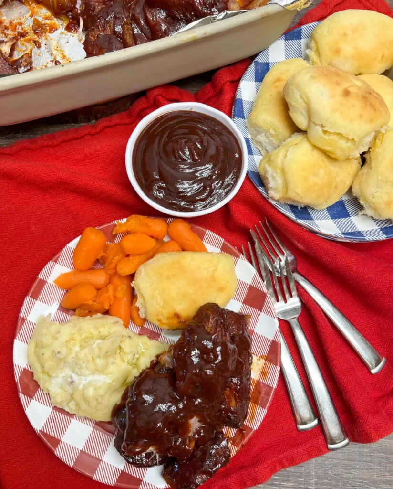

Country Style Ribs

Description
Boneless country-style pork ribs are a super easy recipe to make with simple ingredients.
They have tons of flavor, and you most likely already have a lot of the rub ingredients in your pantry.
Ingredients
-
Smoked paprika
- Salt
-
Black pepper
-
Garlic powder
-
Chili powder
-
Onion powder
-
Dried oregano
-
Dried rosemary
-
Ground ginger
-
Ground dry mustard
-
Light brown sugar
-
Boneless pork ribs
-
Sliced onion
-
Your favorite barbecue sauce
Steps
-
Preheat oven to 300-degrees. Line a 9-inch by 13-inch baking dish with aluminum foil and
spray with nonstick spray or olive oil.
-
Pat the ribs dry with a paper towel and place them in the baking dish.
-
In a small bowl, add the seasonings, salt, black pepper, and brown sugar and mix well.
-
Rub the mixture on all sides of the ribs.
-
Slice the onion and place it on top of the ribs.
-
Pour the water into the pan and cover with aluminum foil.
-
Bake for two hours.
-
At the end of two hours, take the ribs out and check for tenderness
(should be fork tender – if not fork tender, replace the top aluminum foil and bake for 30 more minutes).
-
If tender, remove some of the water with a baster,
brush the barbecue sauce over the ribs, and bake again uncovered for one hour. Serve.